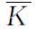
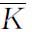
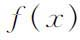
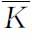

6．抽象代数的范围
我们对抽象代数领域内的成就所作的不多的说明，肯定不能给出哪怕是在这个世纪的头四分之一里创造出来的成果的全貌。但是不管怎样，去说明由于有意识地向抽象化转变而开辟的广阔领域，可能是有帮助的。
截至1900年前后，已被研究过的各种代数课题，不管是矩阵，二元、三元或n元二次型的代数，超数系，同余式，还是多项式方程的解的理论，都是建立在实数系和复数系之上的。无论如何，抽象代数活动的结果产生了抽象群、环、理想、可除代数和域。除了研究这些抽象结构的性质和关系如同构、同态之外，数学家现在发现，几乎对任何代数课题和出现的问题，都可能用任何一种抽象结构去代替实数系和复数系。例如，替代元素为复数的矩阵，我们去研究元素属于一个环或域的矩阵。同样，我们对待数论的问题，用一个环去代替正整数、负整数和0，重新考虑普通整数已经证明了的每一个问题。我们甚至可以考虑系数属于任意域的函数和幂级数。
像这样一些推广确实已经作过。我们曾提到韦德伯恩在他1907年的著作里推广了他前人关于线性结合代数（超复数系）的工作，用任何域代替实系数或复系数。我们也可以用一个环代替域。并研究在这种替换下仍然有效的定理。甚至系数属于任意域或有限域的方程论也已经研究过了。
作为普遍化这一现代趋势的另一例子，试考虑二次型。整系数二次型在整数表示成平方和的研究中，和实系数二次型在圆锥面和二次曲面的表示的研究中，都是重要的。20世纪研究了系数属于任意域的二次型。由于引进了更抽象的结构，所有这些都能够用作老的代数理论的基础或系数域。而且这种推广的过程可以无限地进行下去。抽象概念的这种应用需要用到抽象代数的技巧；这样，许多表面上不同的课题都被吸取到抽象代数里来了。数论（包括代数数）的大部分就是这样的情形。
然而，抽象代数已经毁坏了它自己在数学中所起的作用。抽象代数概念的系统阐述是为了统一各种表面上千差万别的数学领域，例如群论就是这样。抽象理论一经正式形成，数学家们就离开原来的具体领域转而把注意力集中在抽象结构上。通过成百个从属概念的引进，这课题就如雨后春笋般地发展起来，形成一团混乱的细小分支，它们彼此之间，以及和原来的具体领域之间，都没有多少联系。统一性通过多样化和特殊化而取得成功。确实地，抽象代数领域里的大多数工作者都不再知道抽象结构的来源，他们也不关心他们的结果对具体领域的应用。
参考书目
Artin，Emil：“The Influence of J．H．M．Wedderburn on the Development of Modern Algebra，”Amer．Math．Soc．Bull．，56，1950，65-72．
Bell，Eric T．：“Fifty Years of Algebra in America，1888-1938，”Amer．Math．Soc．Semicentennial Publications，Ⅱ，1938，1-34．
Bourbaki，N．：Eléments d'histoire des mathématiques，Hermann，1960，pp．110-128．
Cartan，Elie：“Notice sur les travaux scientifiques，”Œuvres complètes，Gauthier-Villars，1952-1955，PartⅠ，Vol．1，pp．1-98．
Dicke，Auguste：Emmy Noether，1882-1935，Birkhäuser Verlag，1970．
Dickson，L．E．：“An Elementary Exposition of Frobenius's Theory of Group-Characters and Group-Determinants，”Annals of Math．，4，1902，25-49．
Dickson，L．E．：Linear Algebras，Cambridge University Press，1914．
Dickson，L．E．：Algebras and Their Arithmetics（1923），G．E．Stechert（reprint），1938．
Frobenius，F．G．：Gesammelte Abhandlungen，共3卷，Springer-Verlag，1968。
Hawkins，Thomas：“The Origins of the Theory of Group Characters，”Archive for History of Exact Sciences，7，1971，142-170．
MacLane，Saunders：“Some Recent Advances in Algebra，”Amer．Math．Monthly，46，1939，3-19．也见于阿尔伯特（A．A．Albert）主编的Studies in Modern Algebra，The Math．Assn．of Amer．，1963，pp．9-34。
MacLane，Saunders：“Some Additional Advances in Algebra，”见于阿尔伯特（A．A．Albert）主编的Studies in Modern Algebra，The Math．Assn．of Amer．，1963，pp．35-58。
Ore，Oystein：“Some Recent Developments in Abstract Algebra，”Amer．Math．Soc．Bull．，37，1931，537-548．
Ore，Oystein：“Abstract Ideal Theory，”Amer．Math．Soc．Bull．，39，1933，728-745．
Steinitz，Ernst：Algebraische Theorie der Körper，W．de Gruyter，1910；修订第2版。1930；Chelsea（reprint），1950．第一版相同于论文，见Jour．für Math．，137，1910，167-309。
Wiman，A．：“Endliche Gruppen linearer Substitutionen，”Encyk．der Math．Wiss．，B．G．Teubner，1898-1904，Ⅰ，Part 1，522-554．
Wussing，H．L．：Die Genesis des abstrakten Gruppenbegriffes，VEB Deutscher Verlag der Wissenschaften，1969．
(1) Werke，3，439-446．
(2) Bull．des Sci．Math．，（2），1，1877，17-41，特别p．41．＝Werke，3，262-296。
(3) Monatsber．Berliner Akad．，1870，881-889＝Werke，1，271-282．
(4) Math．Ann．，13，1878，561-565；Proc．London Math．Soc．，9，1878，126-133；Amer．Jour．of Math．，1，1878，50-52和174-176；全在他的CollectedMath．Papers，Vol．10中。
(5) Jour．für Math．，86，1879，217-262＝Frobenius，Ges．Abh．，1，545-590．
(6) Nachrichten König．Ges．der Wiss．zu Gött．，1874，529-542＝Ges．Ahh．，5，1-8．
(7) Ges．Abh．，5，314-360．
(8) Math．Ann．，20，1882，1-44和22，1883，70-118。
(9) Amer．Math．Soc．Bull．，8，1902，296-300和388-391，和Amer．Math．Soc．Trans．，6，1905，181-197。
(10) Amer．Math．Soc．Trans．，3，1902，485-492，和6，1905，179-180。
(11) Amer．Math．Soc．Trans．，6，1905，198-204．
(12) Jour．für Math．，100，1887，179-181＝Ges．Abh．，2，301-303．
(13) Math．Ann．，48，1897，548-561＝Werke，2，87-102．
(14) Amer．Math．Soc．Bull．，4，1898，510-515＝Coll．Works．1，266-269．
(15) Amer．Math．Soc．Bull．，4，1898，135-139＝Coll．Works，1，254-257．
(16) Math．Ann．，43，1893，301-412．
(17) Amer．Math．Soc．Bull．，1，1895，61-66，和2，1896，33-43。
(18) Coll．Math．Papers，10，403．
(19) Math．Ann．，34，1889，26-56．
(20) Math．Ann．，40，1892，55 88，和43，1893，301-412。
(21) Math．Ann．，46，1895，321-422．
(22) Sitzungsber．Akad．Wiss．zu Berlin，1893，337-345，和1895，1027-1044＝Ges．Abh．，2，565-573，677-694。
(23) 近来一个重大的成果已由费特（Walter Feit，1930—2004）和约翰·汤普森（John G．Thompson，1932— ）得到（Pacific Jour．of Math．，13，Part 2，1963，775-1029）。全部奇数阶群都是可解的。伯恩赛德在1906年曾把这作为一个猜想提出过。
(24) Math．Ann．，71，1911，116-144．
(25) Math．Ann．，106，1932，295-307．
(26) 这个已于1955年由诺维科夫（P．S．Novikov）加以证明，见American Math．Soc．Translations，（2），9，1958，1-122。
(27) Quart．Jour．of Math．，33，230-238．［此结论已被柯斯特利金（Aleksei Ivanovich Kostrikin，1929—2000）所否定。——译者注］
(28) Amer．Jour．of Math．，4，1881，221-225．
(29) Sitzungsber．Akad．Wiss．zu Berlin，1897，994-1015＝Ges．Abh．，3，82-103．
(30) Proc．London Math．Soc．，（2），3，1905，430-434．
(31) Math．Ann．，52，1899，363-368．
(32) Sitzungsber．Akad．Wiss．zu Berlin，1896，985-1021＝Ges．Abh．，3，1-37．
(33) Sitzungsber．Akad．Wiss．zu Berlin，1897，994-1015＝Ges．Abh．，3，82-103．
(34) Acta Math．，38，1921，145．
(35) Math．Ann．，43，1893，521-549．对于群参看Math．Ann．，20，1882，301-329。
(36) Amer．Math．Soc．Trans．，4，1903，13-20，和6，1905，198-204。
(37) Amer．Math．Soc．Trans．，4，1903，31-37，和6，1905，181-197。
(38) Jour．für Math．，137，1910，167-309．
(39) 这个定义确切陈述应为：称K的扩域

是域K上的伽罗瓦域，如果
是K上的可分代数扩张，而且K上的任一个不可约多项式
只要在
内有一个根，则它在 内完全分解成一次因式的乘积。——译者注
内完全分解成一次因式的乘积。——译者注(40) Bulletin des Sciences Mathématiques de Férussac，13，1830，428-435＝Œuvres，1897，15-23．
(41) N．Y．Math．Soc．Bull．，3，1893，73-78．
(42) Amer．Math．Soc．Trans．，6，1905，349-352．
(43) Amer．Math．Soc．Trans．，15，1914，31-46．
(44) Amer．Math．Soc．Trans．，15，1914，162-166．
(45) 1958年克威尔（Michel Kervaire，1927—2007）在Proceedings of the National Academy of Sciences，44，1958，280-283和米尔诺（John Milnor，1931— ）在Annals of Math．，（2），68，1958，444-449，两人都用博特（Raoul Bott，1923—2005）的一个结果，证明了具有实系数的唯一可能的可除代数（不假定乘法结合律和交换律）只有实数、复数、四元数和凯莱数。
(46) Proc．London Math．Soc．，（2），6，1907，77-118．
(47) Ann．Fac．Sci．de Toulouse，12B，1898，1-99＝Œuvres，PartⅡ，Vol．1，7-105．
(48) Math．Ann．，60，1905，20-116．
(49) Math．Ann．，83，1921，24-66．
(50) Archiv for Mathematik Naturvidenskab，1，1876，152-193＝Ges．Abh．，5，42-75．
(51) Math．Ann．，31，1888，252-290，和33，34，36各卷中。
(52) 1894，2nd ed．，Vuibert，Paris，1933＝Œuvres，PartⅠ，Vol．1，137-286．
(53) Ann．del' Ecole Norm．Sup．，31，1914，263-355＝Œuvres，PartⅠ，Vol．1，399-491．
(54) Bull．Soc．Math．de France，41，1913，53-96＝Œuvres，PartⅠ，Vol．1，355-398．
(55) Mathematische Zeitschrift，23，1925，271-309，和24，1926，328-395＝Ges．Abh．，2，543-647．